Nota: os prints usam uma planilha de exemplo fictícia, uma proposta comercial de teste. Nenhum dado ali é de cliente real.
O problema
Toda empresa pequena tem aquela planilha que ninguém quer abrir. Cor demais, coluna larga demais, uma fórmula que ninguém lembra por que existe, e um "valor final" que não bate com o total. Você já sabe qual é a sua.
Contratar alguém pra refazer isso custa tempo ou dinheiro. E é difícil justificar esse gasto num arquivo que só roda dentro de casa.
Aqui eu mostro outro caminho: resolver direto no Claude Desktop. Sem escrever fórmula, sem instalar add-on, sem curso. Você conecta o Google Drive, manda a planilha junto com um prompt, e recebe de volta uma versão reorganizada. No meu teste ele ainda achou e corrigiu um erro de cálculo, então não é só deixar bonito.
O que você precisa antes
Três coisas: uma conta Google com a planilha que você quer arrumar, o Claude Desktop instalado, e uma conta Claude com acesso a conectores. Free, Pro ou superior serve.
Passo 1: conecte o Google Drive
No Claude Desktop, abra Conectores e adicione o Google Drive. Ele pede login na sua conta Google e permissão de leitura e escrita nos arquivos. É a mesma tela de autorização que qualquer app do Google Workspace usa.
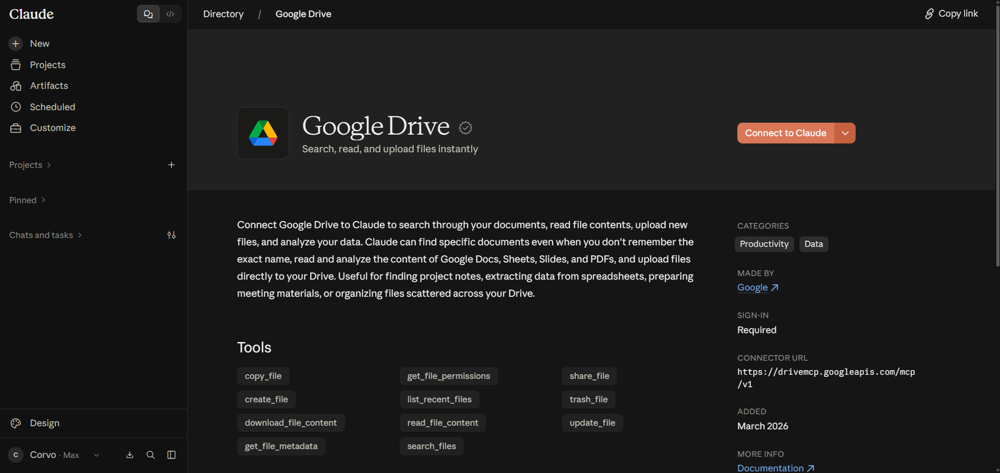
Depois de autorizar, ele mostra Connected e passa a ficar disponível em qualquer conversa nova.
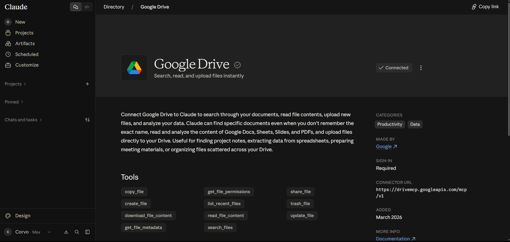
No menu de conectores do chat ele aparece ligado junto com os outros que você já usa. Dali também dá pra buscar um arquivo específico do seu Drive sem sair da conversa.
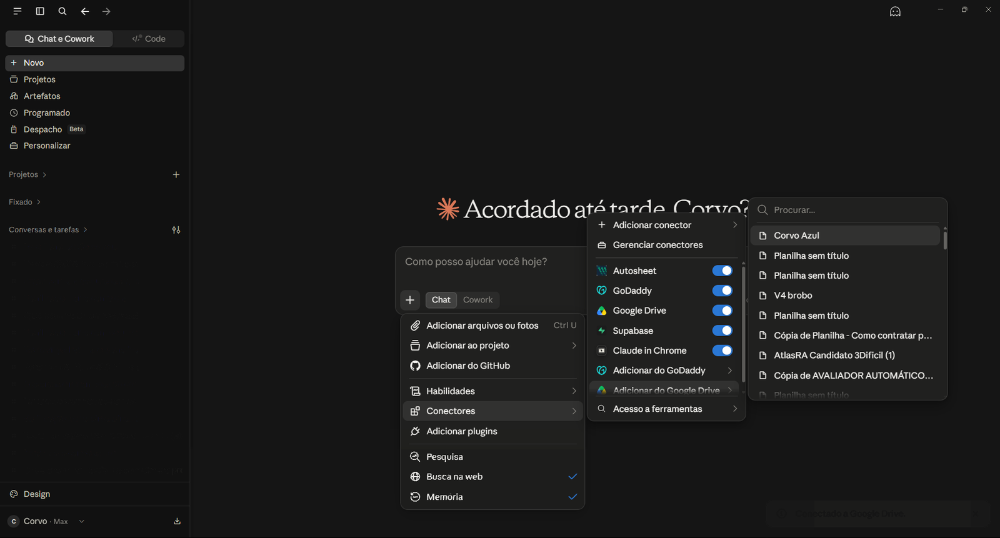
Passo 2: escreva o prompt, ou copie o meu
Esse é o prompt que usei. Repare que ele não pede pra "deixar bonito", que é vago demais e dá resultado aleatório. Ele pede pra entender a planilha antes de mexer, preservar dado e fórmula, e melhorar só organização, formatação e usabilidade.
<role> Atue como um especialista em Excel, design de planilhas e organização de dados empresariais. </role>
<objective> Analise a planilha fornecida e entregue uma versão significativamente mais profissional, organizada, clara e funcional, mantendo a finalidade original do arquivo. </objective>
<instructions>
1. Analise primeiro a estrutura, os dados, as fórmulas e a finalidade de cada aba antes de realizar alterações.
2. Preserve todos os dados, informações e funcionalidades existentes, salvo quando houver erro ou inconsistência evidente.
3. Melhore a hierarquia visual, organização, espaçamento, tipografia, cores, cabeçalhos, bordas, alinhamentos e formatos numéricos.
4. Padronize datas, moedas, percentuais, números e demais formatos conforme o contexto.
5. Aprimore filtros, tabelas, fórmulas, validações e outros recursos quando isso melhorar a usabilidade.
6. Corrija inconsistências de formatação e erros evidentes sem alterar o significado dos dados.
7. Elimine elementos visuais desnecessários e evite excesso de cores, bordas ou efeitos.
8. Priorize clareza, legibilidade, facilidade de manutenção e aparência corporativa.
9. Faça melhorias estruturais somente quando houver benefício claro para o entendimento ou uso da planilha.
</instructions>
A versão final deve parecer uma planilha empresarial desenvolvida profissionalmente: limpa, consistente, intuitiva, visualmente equilibrada e funcional.
Antes de finalizar, verifique se:
- os dados originais foram preservados;
- as fórmulas continuam funcionando;
- não existem inconsistências visuais relevantes;
- todas as abas possuem formatação coerente;
- a hierarquia das informações está clara;
- a planilha permanece prática para uso diário.Cole o link da sua planilha do Google Sheets junto com o prompt, numa conversa nova, com o conector ligado.
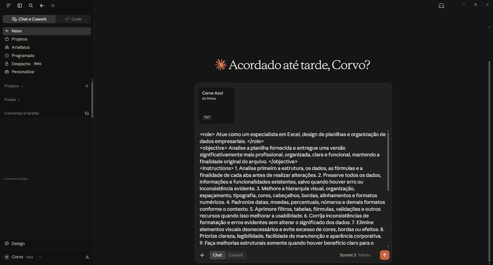
E era assim que a planilha estava antes. Dado solto, sem hierarquia visual, sem padrão de formato.
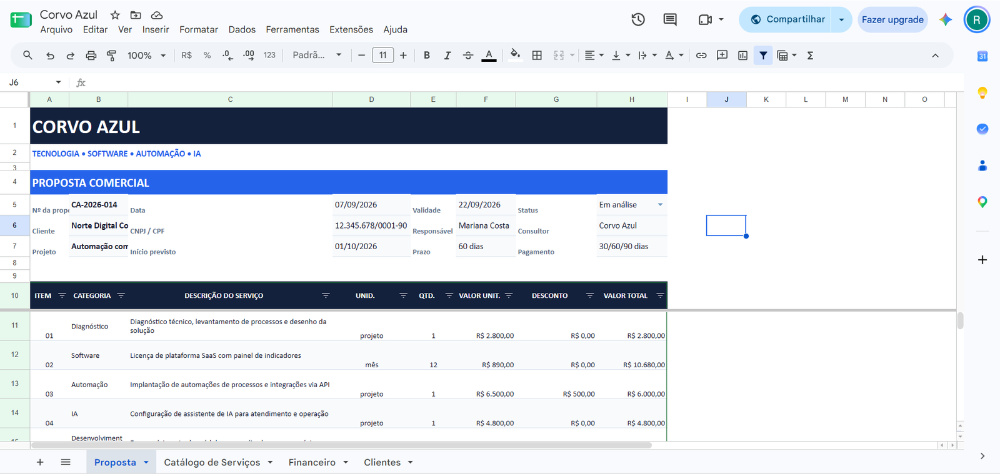
Passo 3: deixe ele trabalhar
O Claude lê a planilha inteira antes de mexer em qualquer coisa. Não só a aba que está aberta: ele passa pelas outras também, procurando referência cruzada entre elas.
Foi aí que apareceu a parte mais interessante do teste. Ele achou uma inconsistência de verdade: uma fórmula de "valor final" que ignorava um desconto e devolvia um total errado. Corrigiu sozinho e avisou exatamente o que tinha mudado.
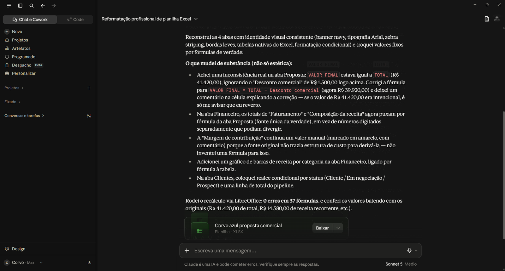
Passo 4: substitua o arquivo
Depois de aprovar o resultado, pedi pra ele trocar a planilha antiga pela nova, direto no Drive. Esse é o único ponto do processo que pede confirmação sua. O Claude não sobrescreve nada sem perguntar.
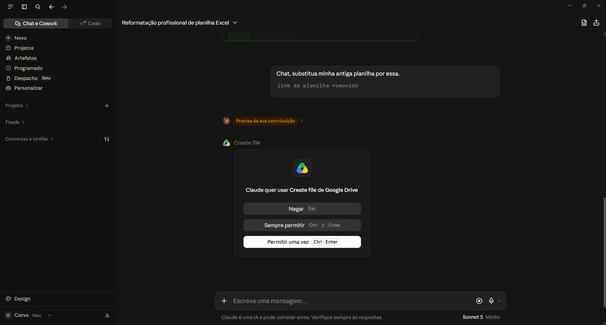
Vale entender as três opções antes de clicar. Negar cancela a ação. Permitir uma vez autoriza só aquela substituição. Sempre permitir libera o Claude pra criar e atualizar arquivos no seu Drive sem perguntar de novo naquela conversa. Em planilha de trabalho eu prefiro sempre "uma vez". É uma confirmação a mais, mas evita susto.
O resultado
A aba de proposta ganhou hierarquia visual, listras alternadas nas linhas e a fórmula corrigida.
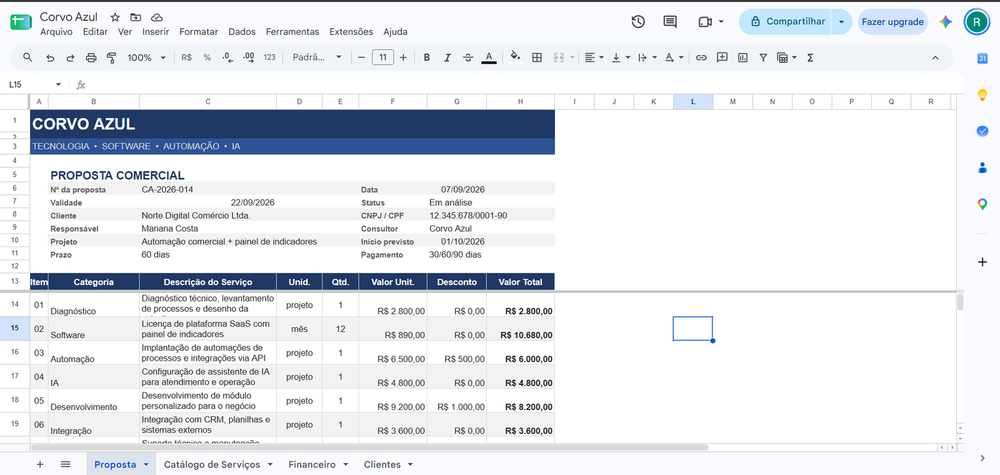
As outras três abas saíram no mesmo padrão, sem eu ter pedido uma por uma: catálogo de serviços, financeiro com gráfico gerado automaticamente, e carteira de clientes.
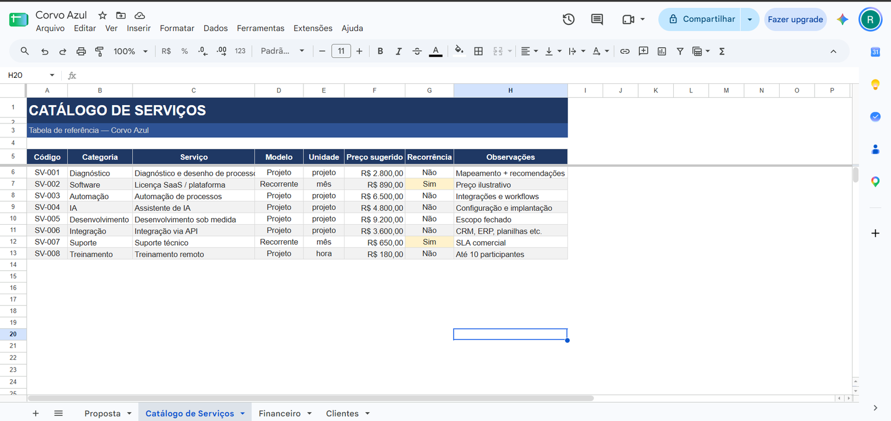
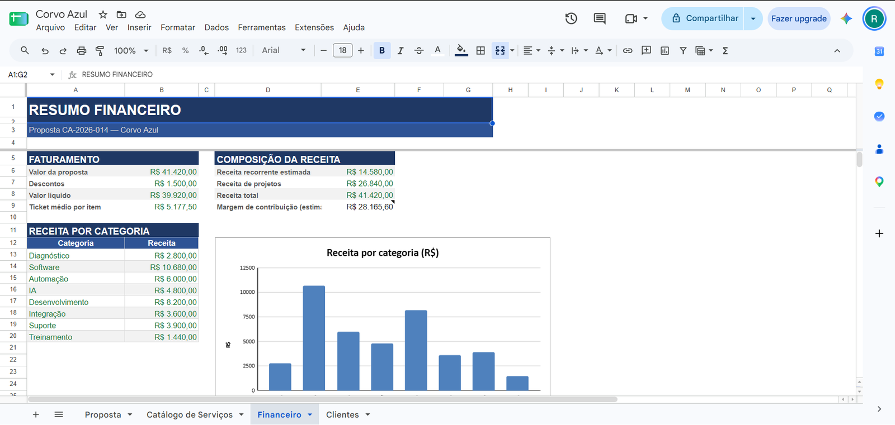
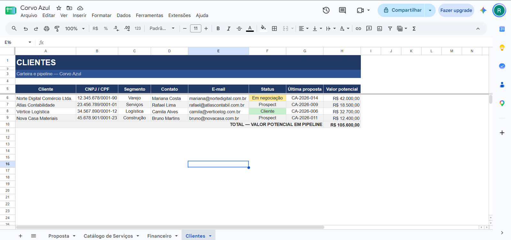
O que eu não pularia
Três avisos, e eles pesam mais que o resto do post.
O conector lê e escreve em qualquer arquivo que sua conta Google alcança. Se a conta for compartilhada, ou tiver dado de terceiro, revise a permissão antes de ligar isso.
"Sempre permitir" continua valendo pelo resto daquela conversa. Se você vai testar em várias planilhas, confirme uma por uma no começo.
E o Claude preserva o que já existe por padrão, mas quem aprova a versão final é você. Confira os números que importam antes de aceitar. Eu comparei os totais de antes e de depois, e foi assim que confirmei que a correção da fórmula tinha ficado certa.
Próximo passo
Se você tem uma planilha dessas parada, o teste é rápido. Duplique ela pra manter o original intacto, conecte o Drive no Claude e cole o prompt acima. Em menos de dez minutos você sabe se serve pra você.